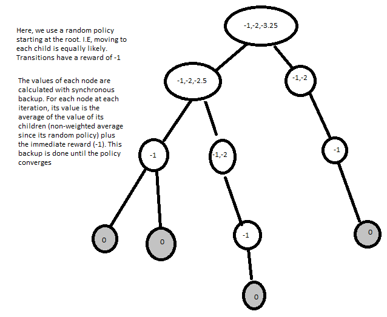
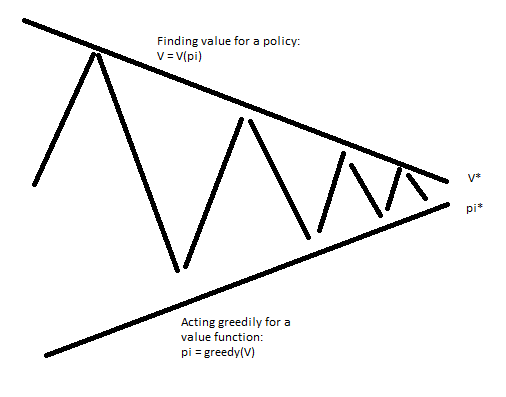
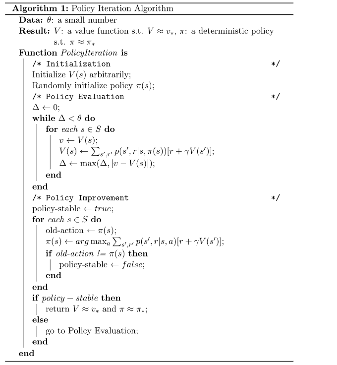
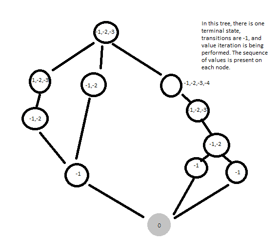
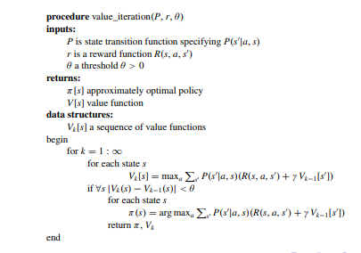
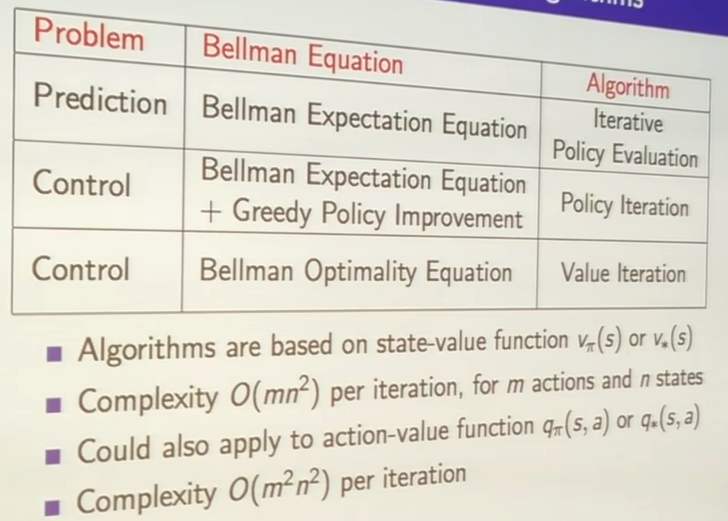

Up
Reinforcement Learning
Dynamic Programming to Solve MDPs
The dynamic programming approach breaks a larger problem into subproblems. With RL, we use the Bellman equation to break the larger problem ino the next step and following steps. This approach can't solve the full MDP problem. It can solve planning problems, where a model is given ahead of time. There are two main planning problems: predicion and control.
Prediction takes in a policy and MDP (states, actions, transition dynamics, rewards, and discount factor) and outputs a value function. Control takes in an MDP and outputs an optimal value function and the corresponding policy. IMPORTANT NOTE: The pseudocode on this page uses a different convention than David Silver's course, where rewards are given upon reaching a state(instead of exiting), so the equations are slightly different
Prediction (AKA Policy Evaluation)
To do this, we can use the Bellman expectation equation(since we are concerned with finding the expected value of the policy). The synchronous method for policy evaluation repeatedly updates all states using the Bellman equation.
$$q_{\pi}(s,a) = E_{\pi}[R_{t+1} + \gamma v_{\pi}(S_{t+1}, A_{t+1}) | S_t =s, A_t = a]$$

Once backup is done, the value at each node is converged. This is the value function!
Control (AKA Policy Iteration)
As a byproduct of Policy Evaluation, we got a value function. We can make a better policy from that policy by acting greedily with respect to the new value function. The iterative process of policy evaluation, act greedily, repeat is the control problem solution!


This process will converge to the optimal policy. Intuitively, this is the case because the final products of this iteration are a converged value function and policy that acts best in response to the value function. This is the definition of the optimal policy!
Another approach is to run a few iterations of value iteration (k=1,2,3). I.E create a new policy after 1,2, or 3 updates of the value function.
With k=1, this is effectively using Bellman optimality instead of expectation, this is a process called value iteration. The reason it is effectively using Bellman optimality is that we are acting greedily with respect to each single step, resulting in the max in Bellman optimality.
$$ v_{\pi}(s) = MAX[R_{s}^a + \gamma \sum_{s' in S} P_{SS'}^a v_{*}(s')]$$


Here, there is no explicit policy since we are just going to different value functions. Stopping at a random point may reach a value function that isn't reachable. Overall, Policy iteration is a more complex algorithm, but it usually faster. Summary of key approaches:
